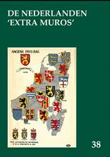
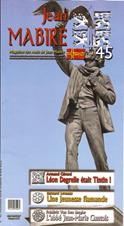

> nieuwsbrief
> 2e trimester 2016
| Bijdragen over: |
Hernieuwen
ledenbijdrage voor 2016
Het
vernieuwen van de bijdragen verliep andermaal vlot – waarvoor
de dank van onze penningmeester. De weinigen die tot nog toe
verstek gaven kunnen hun toetreding alsnog bevestigen door
overboeking van hun bijdrage. De bijdrage beloopt voor het in
mei te verschijnen nieuwe Jaarboek De
Nederlanden ‘extra muros’ en voor de
driemaandelijkse Nieuwsbrief Zannekin
29 €. Vanaf 35 € wordt u met dank als steunend
lid geboekt.
Jean-Marie
Gantois
Het jongste nummer
van het Bulletin des Amis de Jean Mabire
is quasi volledig gewijd aan diens contacten met de
zuidelijke Nederlanden. alvast de contactgegevens van de
Association des Amis de Jean Mabire: www.jean-mabire.com
Adres: 15, route de Breilles, F. 1730 Nernay Saint Martin.
In de vorige
Nieuwsbrief beloofden we hierop terug te zullen komen.
Verderop in dit nummer brengen we de integrale tekst van het
eerste luik van de aan Gantois gewijde bijdrage, die nauw
aansluit bij de bijdragen over hem in ons nieuwe jaarboek.
Jaarboek De Nederlanden ‘extra muros’ 38 (2016)
Het nieuwe jaarboek is redactioneel
afgerond. Hieronder leest u alvast het ten geleide, tevens een
inhoudsoverzicht op de aan bod komende onderwerpen.
Dit 38e Jaarboek De Nederlanden ‘extra
muros’ brengt eens te meer merkwaardige bijdragen over
de territoria die deel uitmaken van onze Nederlandse kijk op
de geschiedenis van onze territoria ‘extra muros’.
Als steeds opent het jaarboek met wat
de ‘programmaverklaring’ van de Vereniging /Stichting Zannekin kan genoemd
orde; m.a.w. waar het ons om gaat.
Eens te meer is onze trouwe medewerker
Cyriel
Moeyaert
present, dit keer met een bijdrage over De
Vlaming Willem van Rubroek. We geven
meteen mee dat hij een tweede aanvulling op stapel heeft staan
op zijn Woordenboek
van het Frans-Vlaams; een tweede Nieuw Oud Vlaams
dus, aansluitend op zijn Nieuw Oud Vlaams 1, dat we in 2011 (naast ons
jaarboek) mochten uitgeven en dat in 2014 al een herdruk
beleefde. Via de Zannekin Nieuwsbrief
houden we u vanzelfsprekend op de hoogte van de verschijning
van zijn Nieuw Oud
Vlaams 2.
Klaas van Gelder en Jan Debets besteden
in Barrièretroepen in de Oostenrijkse
Nederlanden: vloek of zegen uitgebreid
aandacht aan wat daarmee - nu ruim drie eeuwen terug -
allemaal gepaard ging, en waarmee de barrièresteden in dit
perspectief te maken kregen.
Chronologisch daarop aansluitend
vestigt Frank Judo
de aandacht op een merkwaardige pamflet van de Gentse
jurist Jean-Louis Serlippens die, in 1815 naar aanleiding van
het aantreden van het Koninkrijk der Nederlanden, de aandacht
vestigde op de aan Frankrijk verloren irredenta. Zijn opstel Strategische
belangstelling voor de Zuidelijke Nederlanden in de
schaduw van Waterloo vertelt ons daar
meer over.
In Emile Verhaeren
(1855-1916) de Franstalige dichter met een Vlaams hart
haalt Ruud Bruijns
een figuur voor het voetlicht die een eeuw terug
overleed maar, niettegenstaande zijn Franstaligheid een
Vlaming in hart en nieren bleef en - getuige zijn oeuvre - de
leuze “de taal is gans het volk” glansrijk weerlegde.
Ook van de hand van Ruud
Bruijns is de “trouvaille” Les
Marches de l’Est (1909-1914) over Vlaanderen, Wallonië
en de grensgebieden van de Nederlanden.
Het geopolitieke belang van dat hier door vrijwel niemand
gekende Franse tijdschrift werd tot nog toe nergens in de
Nederlanden onderkend. Zijn eerste exploratie is dan ook
verhelderend en toont alvast aan dat het staatsimperialisme
evenzeer aan de zuidgrens als aan de oostgrens van de
Nederlanden zijn aanhangers had.
In 1965 publiceerde de (toen nog)
Vereniging Zannekin,
onder de titel Bezinning bij een verjaardag,
de rede die Jean-Marie Gantois gehouden had op 13 september
1964, naar aanleiding van de viering van zijn 60e verjaardag
in het Grafelijk Slot van Male. Zijn persoonlijkheid lag
overigens aan de basis van de heroprichting van de vereniging.
We zijn ondertussen zowat vijf decennia verder en al die jaren
werd zijn spoor verder gevolgd en (ook richting ‘Duitse’
Nederlanden) uitgebouwd. Daarom brengen we in piëteitsvolle
herinnering het biografische essay van Jos Vinks onder
de summiere titel Jean-Marie Gantois. Hij
was immers zowat de geestelijke stichter van Zannekin. Daarop
aansluitend volgen de Herinneringen aan
Jean-Marie Gantois van Hendrik
Blanckaert, een telg uit de Blanckaert-stam die
destijds met Nicolaas Zannekin aantrad in de Slag van Kassel
in 1328.
Ook weer prominent aanwezig in deze
editie is Zeno Kolks.
Gewoontegetrouw brengt hij ook nu weer kunsthistorische
gegevens op architectonisch terrein aan de oppervlakte. Ook
zijn Gebouwen en beeldhouwwerken die in onze
gebieden door oorlogs- en ander geweld definitief
ten onder zijn gegaan kadert binnen dit
perspectief. Zijn bijdrage vormt andermaal de naadloze
overgang van de zuidelijke naar de noordelijke gebieden.
Volgen van de hand van Marten
Heida De Gelderse
Achterhoek en het Westmunsterland tijdens de Eerste
Wereldoorlog en Oostrand-sprokkels.
In de eerste bijdrage bespreekt hij uitgebreid de tweetalige
boekpublicatie Als Krieg und Frieden
nebeneinander wohnten – Toen oorlog en vrede elkaars
buren waren terwijl
hij in zijn tweede bijdrage tal van wetenswaardigheden over de
‘Duitse’ irredenta bijeensprokkelde.
Evenzeer kaderend binnen de herdenking
van de Eerste Wereldoorlog, maar dan binnen de zuidelijke
Nederlanden, kadert de slotbijdrage van Luc Collin
over De Engelen van Bergen
en Kerstmis 1914 in de loopgraven van de
Westhoek waarin hij enkele hoopvolle maar o zo
tijdsgebonden momenten evocerend in herinnering Afsluiten
doen we traditiegetrouw met een andermaal rijke oogst aan Kroniek
en boekbesprekingen, waarvoor
voornamelijk Marten Heida zich inspande.
Alvast te noteren:
Op zaterdag 6 augustus
bezoeken we een dagje Den Haag
en op zaterdag 24
september houden we onze Ontmoetingsdag
in het teken van de Geuzenopstand
(1566-2016) in Belle/Bailleul.
Over het stramien van beide dagen verneemt u méér hieronder.
Méér info omtrent de deelnemersbijragen en de wijze van
aanmelden voor deze beide activiteiten leest u in onze
volgende Nieuwsbrief.
Dagje Den
Haag op 6 augustus
De
belangstellenden komen op eigen houtje naar Den Haag alwaar
Jan van Tongeren ons om 11.00 uur verwelkomt aan het Plein Den
Haag bij het standbeeld van Willem van Oranje. De wandeling
zal vanaf het Plein ongeveer 1 1/2 uur duren, dus tot ongeveer
12.30. Daarna op eigen gelegenheid lunch. Op Het Plein zijn
tal van restaurants en eetgelegenheden, en het hele Plein is
bij mooi weer vol met terrassen. Voor de diehards is er ook
gelegenheid om het Mauritshuis op eigen kosten te bezoeken.
Rond 14.00 uur beginnen we met de tweede helft van de
wandeling, eerst richting Plein 183 en daarna Mesdag, met
eventueel een bezoek aan het Panorama en vlak daarbij het
Vredespaleis. Dan met de tram naar Scheveningen met het Willem
I monument, en dan op de boulevard de afsluiting. ongeveer
17.00 uur. Ik kan me voorstellen, dat menigeen daar iets gaat
consumeren en men kan dan ook weer met de tram richting het
Centrum. Veel kosten zullen er niet zijn. Entree Mesdag ong.
10.00 euro. Bij wijze van handreiking ontvangen de deelnemers
een handzame brochure die de gissing in woord en beeld
illustreert.
Info parkeren Den
Haag: P+R Hoornwijck: parkeren en tramdagkaart:
Je parkeert je auto de hele dag bij P+R
Hoornwijck, en reist de hele dag met de tramlijnen van HTM. Je
mag reizen met maximaal 4 personen. P+R-terrein Hoornwijck
ligt aan de Laan van
Zuid Hoorn 38 Rijswijk (parkeergarage). Je komt er via
de A4 (afslag 9, Ypenburg) en de A13 (afslag 7, Den
Haag-Zuid). Met tram 15 ben je – tot halte Spui vlakbij het
Plein - zo ter plaatse. Parkeren + een dagkaart voor het
openbaar vervoer voor 4 personen kost aan die P+R op zaterdag
van 00:00 tot- 24:00 uur: € 2,00. Voor mensen die met het
openbaar vervoer komen: de internationale treinen
stoppen op Den Haag Hollands Spoor. Daar overstappen op Den
Haag Centraal en dan ong. 10 minuten lopen naar het Plein.
Ontmoetingsdag
Belle/Bailleul 24 september
Op eigen
houtje naar Belle/Bailleul alwaar om 10.30 uur: ontvangst en
verwelkoming in ‘La pomme d’or’, 27 rue d’Ypres te Belle.
Aldaar drie korte voordrachten rond het thema van de
Geuzenopstand die in deze contreien losbrak in 1566, door
respectievelijk Erik Vanneufville, inleiding, Wido Bourel rond
de thematiek van zijn recente publicatie over de Geuzenstrijd,
en Marten Heida, over de betekenis van de geuzen-opstand.
Middagmaal in ‘La pomme d’or’. Namiddag: stadswandeling met
geleid bezoek aan het Benedict de Puydt-museum en
stadswandeling o.l.v. Leo Camerlynck met aandacht voor het
stadhuis met belfort, de kapel O.L. Vrouw van Halle, de
St.-Vedastuskerk (met glasramen rond de Beeldenstorm), de
kantschool, het Présidial des Flandres, de borstbeelden van M.
Yourcenar en E. de Coussemaker en het nieuwe Centre d’histoire
van Eric Vanneufville. Afsluit omstreeks 16.00 uur met een
vriendschapsdronk. Deze dag wordt ingericht in samenwerking
met de Orde van den Prince – Land van Edingen en met het Huis
van het Nederlands te Belle.
Un éveilleur de peuple, l’abbé Jean-Marie Gantois (deel 1)
Fréderic
van den Berghe
En
mai 2018, cela fera 50 ans que l'abbé Jean-Marie Gantois aura
été porté en terre. En terre de Flandre, dans son village
natal de Watten, à la frontière de deux des XVII provinces des
Pays-Bas, la Flandre et l'Artois.
En
cette fin mai 1968, l'assistance fut modeste à ses obsèques en
regard de la notoriété du personnage. Epoque agitée, où les
Français pensaient faire la révolution, et où l'essence était
aussi rare que les communications téléphoniques. Ceux qui
parvinrent à se déplacer étaient les amis. Pour eux, Gantois
était «l’Abbé››. Qui était Gantois? Qu`en reste-t-il de nos
jours?
Kaft van het betreffende nummer
van het tijdschrift
Jean-Marie
Gantois était né le 21 juillet 1904 dans une famille
bourgeoise et francophone mais ouverte à la langue flamande;
le père médecin devait s`en servir dans ce village alors
majoritairement flamingant, et sa mère avait des contacts avec
Guido Gezelle, le grand poète flamand du XIXe siècle.
Scolarisé à Saint-Omer et Aire-sur-la-Lys, le jeune Gantois y
sera confronté aux sarcasmes et insultes dont on abreuvait les
jeunes Flamands venus d'Hazebrouck, de Cassel ou de
Steenvoorde. Les punitions pour cause de langue maternelle le
révolteront. Devenu séminariste, il n'a pas vingt ans
lorsqu’il fonde, sur les conseils du chanoine Looten, le
‘Vlaamsch Verbond van Frankrijk’ (VVF).
On
peut, sans craindre d`exagérer, dire que ce 7 mars 1924, au
Cats-berg/Mont des Cats, il fonde le Mouvement Flamand de
France. Le but des deux ecclésiastiques est de
«décléricaliser» -eh oui! - un mouvement qui jusqu'alors
n'était qu'un aréopage ultra modéré de savants curés et de
bourgeois bien-pensants, réunis dans un fort honorable Comité
Flamand de France (CFF), fondé en 1853. Une très productive
société savante d'ailleurs, directement inspirée par Napoléon
III et Prosper Mérimée, mais qui s'était bien gardée, et se
gardera encore très longtemps de toute prise de position
revendicative, tout au plus des «vœux» ou des «souhaits».
Gantois
voit les choses un peu autrement. La Flandre a un peuple; une
partie de ce peuple parle flamand; il a une histoire, une
culture, et des droits à connaître cette histoire et faire
prospérer cette culture. Un programme qui n'est pas du goût,
on s'en doute, des autorités de la
République-Une-et-indivisible. A cet idéal, Gantois offre
toutes les ressources de sa personnalité forgée lors de
solides études (il acquit par lui-même une parfaite maîtrise
écrite et orale du néerlandais), toute sa fougue, sa verve
caustique qui jamais ne tomba dans la vindicte vulgaire, un
indéniable talent de polémiste, voire de pamphlétaire.
Il
mène son action flamande
dans une 'période de l’histoire européenne qui n`est pas
n'importe laquelle. Entre deux guerres qui sèmeront la
dévastation et la mort en Flandre et en Artois, notre
continent est confronté à la montée des totalitarismes:
Révolution russe, prise de pouvoir par les fascistes italiens
puis les nationaux-socialistes allemands, crise économique,
Front Populaire, guerre d`Espagne... Au milieu de cet océan
déchaîné, pour Gantois il y a la Flandre. Il est absolument
impossible de ne pas tenir compte de ces circonstances si l'on
veut comprendre Faction de Gantois et de ses amis au sein du
Vlaamsch Verbond.
L'abbé
est d'avis que la Flandre et son peuple ont un génie propre,
qu'il convient non seulement de défendre, mais que sa mission
et celle du VVF est de «travailler si modestement que ce soit
à la construction du beffroi que les générations élèvent
pierre par pierre pour la sauvegardez de nos libertés et
l’honneur du nom flamand.»
Cette
construction est opiniâtre et besogneuse; il faut défendre
pied à pied la culture flamande et sa langue face à une
francophonie -française et belge - foncièrement hostile. A la
même époque, le peuple flamand en Belgique se bat pour obtenir
des droits linguistiques élémentaires (administration,
justice, armée, école, enseignement universitaire) et le
climat est tendu entre les flamingants et l’establishment
francophone, c'est-à-dire la bourgeoisie flamande francisée,
la Cour, l'épiscopat, la presse francophone bruxelloise et
wallonne à la remorque de Paris...
L'épisode
de la néerlandisassions de l'Université de Gand en 1930 -
réclamée par la Mouvement Flamand en Belgique depuis 1847! –
fut l'occasion pour la presse française de déverser des
tombereaux d'injures sur la culture flamande. Ce ne pouvait
être qu'une opération «pangermaniste»! Les journaux régionaux
ou parisiens étaient dûment informés par leurs chers confrères
francophones de Bruxelles (En ce début du XXIe siècle, cela
n'a guère changé!).
Avec
ses très modestes moyens, ses publications en français et
néerlandais (Le Lion de
Flandre et De
Torrewachter) il tente de prendre le contre-pied. On
imagine la disproportion des forces en présence. L'abbé a donc
des amis, mais aussi beaucoup d`ennemis, et sa vigilance n'a
d'égale que la mauvaise foi, le mépris et |'arrogance de ses
contradicteurs.
Quand
on lit un livre d'histoire, on ne lit pas une page sur deux.
Il suffit de relire la presse de l`entre-deux guerres, de
l'ardeur jacobine de la gauche à la gréco-latin omanie
échevelée d'un Maurras, pour se rendre compte que la tâche du
Vlaamsch Verbond était tout sauf aisée.
Pendant
tout ce temps, la République continuait sa comme ailleurs. Ce
n'est qu'en 1959 que disparut la dernière inscription «defense de parler flamand»
du mur de l'école communale de Berthen, près de Bailleul. En
1970 encore, on relève à Hondschoote des punitions pour cause
de langue maternelle flamande!
Aujourd'hui,
ces mesures de salubrité linguistique sont superflues,
caduques. Privés d'enseignement de leur langue et de leur
histoire, les petits Flamands sont «normalisés» (c'est le
terme employé récemment par le journal Le Monde à propos de
la disparition du dialecte alsacien à Strasbourg). Plus
récemment encore, Le
Figaro s'émerveillait du sauvetage du français en
Louisiane, qui, lui, n'a pas péri sous les coups des hussards
noirs de la Great Republic WASP!
Qui
osera dire que le combat de l'abbé Gantois n'était pas aussi
légitime que celui des Cajuns de Louisiane? Aujourd`hui
encore, en lisant la presse française ou francophone belge, on
comprend bien que les grands principes des Droits de l`Homme
sont à géographie variable.
Tout ce qui est flamand est nôtre
De
1924 à 1939, l'action du VVF est essentiellement culturelle:
publications diverses et variées, contacts avec la Belgique
flamande, congres thématiques, par exemple celui de 1932
consacré au théâtre et aux marionnettes alors qu`en 1931 on
s'était intéressé au sort des moulins à vent du plat pays.
Certains y voient encore une manifestation d'un nationalisme
exacerbé...
Il
faut insister sur la ligne de conduite de Gantois: «Tout ce
qui est flamand est nôtre». L'article du Lion de Flandre après
le suicide de Roger Salengro le démontre clairement. Gantois
savait gré à celui-ci d`avoir réintroduit dans la capitale des
Flandres le drapeau sept fois séculaire qui pavoisera nos rues
lilloises, jusqu'à l'arrivée en mars 2001 d`une Madame la
Maire, militante de l'épuration vexillologue...
On
avait, en 1936, dans la presse parisienne de droite, vomi des
fleuves de haine contre celui qui, devenu ministre du Front
Populaire, avait osé, de retour à Lille, apporter «le salut du
gouvernement de la République aux populations de Flandre et
d'Artois». Le portrait du Ruwart4 de Lille ornera
les murs du siège du VVF, 77 rue de l'Hôpital Militaire à
Lille, durant toute |'occupation. N'avait-il pas fait
construire le plus haut beffroi de Flandre?
On
peut dire que Gantois ratissait large. Quelques lignes du «fils
du peuple», dans le livre éponyme ou Maurice Thorez évoque le
soutien que lui apporta la lecture de Thijl Uylenspiegel lors
de son incarcération, éveilla chez l'Abbé un moment de
sympathie. On peut penser que Gantois dut fort apprécier le
film (Till l’Espiègle)
ou Gérard Philippe incarne le pur héros du pays flamand, et
qu'il fut beaucoup moins charmé par La Kermesse héroïque.
En
1939, Marianne III et sa «Sécurité Militaire» suspendent les
activités du VVF. Le seizième Congrès, qui devait traiter de
la natalité, n'aura pas lieu (c`était pourtant un thème
d'actualité dans une France malthusienne). Ce n'est qu'en
janvier 1941 que le VVF reprend son action, qui restera
culturelle tout au long du conflit comme elle l'avait été
avant. Le souci de l'Abbé est celui de tout militant d'une
cause: atteindre le maximum d'auditeurs et de lecteurs.
Inlassablement il parcourt nos régions et la Belgique flamande
voisine pour porter la bonne parole. Le temps libre ne lui
manque pas; à sa demande, il a été déchargé par l'évêque de
Lille, le fameux cardinal Liénart, de toute mission pastorale.
La paroisse de l'abbé Gantois compte XVII Provinces: les
Pays-Bas. Il propage cette idée non seulement dans les
publications habituelles du VVF, mais publiera en français et
en néerlandais plusieurs ouvrages qui resteront sinon des
références, du moins des sources d'informations inestimables.
[Deel 2 volgt in onze Nieuwsbrief 3/2016]
Uit de toespraak door Geert Bourgeois bij de uitreiking van de Erepenning Marnixring aan Cyriel Moeyaert
In dit
taalminnende gezelschap verstout ik mij met een gedicht te
beginnen.
“Wij spreken
allemaal
Professor Paardekooper
een soort van
standaardtaal,
vond
deze taal niet proper.
al klinkt die
ietskes anders
Geert Bourgeois werd zijn fan
dan bij de
Nederlanders.
en leerde ABN.
Elk dorp klapt
onderhands
Maar onze professoren
zijn eigen
plattelands,
en andere domoren
een nieuw
Neandertaals,
maakten het dialect
doorspekt met
koeterwaals.
weer
politiek correct.
Dat Vlaams
klink wonderschoon
De Vlaming hijst de vlag
bij Walschap,
Claus en Boon
van die cultuuromslag.
of in de
streekgazet
en noemt zijn
provinciaal
van Strop,
Sinjoor en Ket.
gestamel standaardtaal.
Dames en
heren, zoals elk poëem bevat ook dit gedicht van
schrijven-vertaler Paul Claes enkele verzen dichterlijke
overdrijving. (…) Wat zeker geen hyperbool is, is het feit dat
ik een fan ben van wijlen professor Piet Paardekooper en van
correct spreken en schrijven van het AN, zoals ik het 50 jaar
geleden heb mogen leren van de gevierde van vandaag.
Beste
oud-leraar en mentor Cyriel, (…) ik ga je lange levensloop
niet beschrijven, dat zal Wido Bourel straks doen in zijn
lofrede. Ik wil voor-al mijn grote waardering uitspreken en
mijn dank betuigen voor je inzet als pionier-promotor en
behoeder van het Algemeen Nederlands. Terzelfder tijd belette
je dat niet om met evenveel gedrevenheid het Frans-Vlaams, het
door jou geliefkoosde ‘Vlaemsch’, in kaart te brengen, te
koesteren en te bewaren voor het nageslacht.
Je was
militant van de eerste ABN-kernen in de jaren 1960 toen we ’s
ochtends op de radio nog vergast werden op ‘Voor wie haar soms
geweld aan doet’ van Marc Galle en toen ’s avonds op de
televisie Joos Florquin, Annie van Avermaet en Fons Fraeters
‘Hier spreekt met Nederlands’ presenteerden.
Als leraar
nam je ons mee met Caesar door de Bello Gallico en met
Xenophon door de Peloponnesische
Oorlogen. Maar of je nu Nederlands, Latijns, Grieks,
Aardrijkskunde, Geschiedenis of Godsdienst gaf, elke les
bestond uit een bijkomende gratis les Nederlands.
Zowat een
halve eeuw geleden maakte je ons bewust van het belang, van de
noodzaak van ABN, van Algemeen Beschaafd Nederlands – zoals
dat toen nog heette – en trok je ten strijde tegen elk
gallicisme of germanisme dat uit onze mond of onze pen durfde
te komen. Je riep ook je collega’s-leraars in Izegem op om
correct Nederlands te spreken en te schrijven.
Dat ik door
enkelingen als eens voor ‘taalpurist’ word versleten –
an-deren zeggen dat ik ‘taalvast’ ben – heb ik aan jou te
danken. Je kon, best je leerlingen voor onze Nederlandse taal
bezielen, in geestdrift brengen, natuurlijk niet begeesteren.
Helaas horen we nog dagelijks burgemeesters in Vlaanderen
toespraken beginnen met “ik houd er aan” in plaats van: “ik
hecht er aan, ik stel er prijs op.” (…)
Cyriel
Moeyaert heeft nog een tweede passie: Frans-Vlaanderen.
Onvermoeibaar heeft hij als Izegemnaar, later als
‘schreve’-bewoner, geijverd en ijvert hij voor het behoud en
de opwaardering van het “Vlaemsch”. Een halve eeuw lang heeft
hij de taal beluisterd en woord voor woord opgeschreven. Met
de hulp van enkele andere taal-kenners, heeft hij zijn
monnikenwerk in 2005 vereeuwigd in het Woordenboek van het
Frans-Vlaams / Dictionnaire du Flamand de France. Het is
een onschatbare bijdrage aan het Nederlandse taalwetenschap en
aan het Vlaamse en Nederlandse cultuurpatrimonium.
Cyriel, we
zijn er je ontzettend dankbaar voor. Sindsdien is je
ongelooflijk sterke geest niet opgehouden met schrijven.
Verleden jaar mocht ik nog het voorwoord verzorgen voor de
Franse vertaling van Drie
eeuwen Nederlandse letteren in Noord-Frankrijk, dat je
in 2012 in het Nederlands schreef met Yvo Peeters.
Legendarisch
zijn je 26 bijdragen in De
Zuidelijke Nederlanden. (boek uit 2009). Daarnaast
publiceer je al 50 jaar in Ons Erfdeel en lever je talrijke bijdragen voor
het Jaarboek De Franse
Nederlanden [en voor het Jaarboek De Nederlanden
“exrta muros” – n.v.d. Nieuwsbrief-redactie].
En het kon niet anders of je droeg ook je liefde voor dit
mooie stukje van de Nederlanden over op je leerlingen. Jaar na
jaar trokken zij er met de fiets met jouw vriendelijke vraag
naar toe. Logeren bij Vlaamssprekende boeren. Opdracht: alle
vermeldingen, opschriften, gezegden en spreuken in het
Frans-Vlaams noteren, waar dat kon fotograferen en daarover
aan jou rapporteren. We deden dit graag, we leerden goed
fietsen – de Cats-berg en Kassel, en veel andere heuvels
moesten we overwinnen, we leerden Picon drinken en leerden wat
gastvrijheid is. Zo konden we je eens verblijden met een foto
van dat ene kapelletje met een Vlaams op-schrift dat je nog
niet ontdekt had. Ik ken de tekst, zo denk ik toch, nog uit
het hoofd: “O mensch en
zet hier geenen voet of weest Maria gegroet”.(…)
Dames en
heren, Cyriel Moeyaert is het levende bewijs dat én
stan-daardtaal én streektaal moeiteloos hand in hand kunnen
gaan. Hoe authentiek en liefelijk onze dialecten ook zijn, ze
zijn de taal van een beperkt aantal mensen en een beperkt
gebied. Nederlands daarentegen geeft toegang tot een
taalgebied van 23 miljoen mensen (…). Wij hebben veel te
danken aan mensen zoals Cyriel Moeyaert, mensen die
onverdroten ijveren voor de Nederlandse taal, die vol
enthousiasme de liefde voor de Nederlandse taal overbrengen
aan jong en oud. Voor zowat 23 miljoen mensen is Nederlands de
moedertaal. Ongeveer 16 miljoen van hen wonen in Nederland,
6,5 miljoen in Vlaanderen en 400.000 in Suriname, Aruba en de
Nederlandse Antillen.
Daarmee is
het Nederlands een van de 40 meest gesproken talen in de
wereld. Meer dan ooit studeren buitenlanders Nederlands. Of
het Nederlands over honderd jaar nog zal bestaan, hangt van de
taalgebruikers zelf af. Én vooral van hun zorg en aandacht
voor de taal.
Laten we dus
onze moedertaal koesteren, ze liefderijk verzorgen. Aan
taalminnaars en taalkenners vertel ik niets nieuws als ik zeg
dat een taal leeft. Elke taal evolueert en iedere regio binnen
een taalgebied kent haar typische klanken, woordenschat en
zinswendingen.
Variatie in
de taal is onvermijdelijk. Allen moeten we er samen over waken
dat de gesproken taal in Vlaanderen en Nederland niet
uiteen-drijft. Zowel het zuidelijk verkavelingsvlaams als het
noordelijke pol-dernederlands zetten het Standaardnederlands
onder druk. Dit is een nefaste evolutie. Ik kan niet genoeg
onderstrepen hoe belangrijk het is dat we, zowel in Vlaanderen
als in het Nederlandse taalgebied, inzetten op één
standaardtaal. (…)
Dames en
heren, ik bedank de Marnixring voor haar uitnodiging en voor
haar jaarlijks initiatief om een erepenning uit te reiken aan
een verdienstelijk persoon. Beste Cyriel, van harte
gelukgewenst met je erepenning. Ik wens je nog veel jaren vol
van liefde en geestdrift voor onze Nederlandse taal en
cultuur, voor je geliefde Frans-Vlaanderen.
Marten
Heida
Ontmoetingen
met Gerrit Herlyn
Eén van de bekendste predikanten in het
naoorlogse Oost-Friesland is ongetwijfeld Gerrit Herlyn
geweest. Mijn eerste “ontmoeting” met hem dateert van het
voorjaar van 1984. Een lijfelijke ontmoeting was het weliswaar
niet, reden waarom ik het woord tussen aanhalingstekens gezet
heb. Maar toch een ontmoeting, maar dan langs schriftelijke
weg. Ik had ergens gelezen dat hij het Nieuwe Testament had
vertaald in het Ostfreeske Platt. Dat bericht was voor mij
voldoende aanleiding om de twee deeltjes van “Dat Neei Testament”
aan te schaffen.
Enkele jaren later heb ik hem
persoonlijk ontmoet. Ik had voor het Nederlands Dagblad
een artikel geschreven over zijn vertaalwerk en hem een
exemplaar toegezonden van de krant waarin het gepubliceerd
was. Van die gelegenheid had ik gebruik gemaakt hem te vragen
of ik op bezoek mocht komen voor een gesprek. Als herinnering
daaraan kreeg ik –voorzien van een opdracht- het boekje
“Pessalms” mee.
Enkele jaren later stond er in Ostfriesland Magazin
een oproep van een zekere Jürgen Sternsdorff uit Leer. Die
oproep had te maken met Gerrit Herlyn. Hij liet daarin weten
dat hij voornemens was over hem een biografie te schrijven.
Zijn vraag was dan ook hem te voorzien van informatie. Ik heb
daarop gereageerd door hem mijn weergave van bovengenoemd
gesprek toe te zenden.
Op 27 mei 2015 ontving ik het boek Gerrit Herlyn zwischen
Kreuz und Hakenkreuz als
dank voor de toegezonden informatie. Voor mij is dat
aanleiding geweest de volgende impressie aan het papier toe te
vertrouwen.
Leer: De ene is er geboren, de andere is in
dezelfde stad een reeks van jaren predikant geweest. Wat ze
met elkaar te maken hebben? Wel, de in 1944 geboren Jürgen
Sternsdorff heeft zich gezet tot het schrijven van een
deelbiografie over Gerrit Herlyn die er jarenlang Gods Woord
heeft verkondigd. Een deelbiografie: Sternsdorff heeft zich
beperkt tot de jaren tussen 1909 en 1950.
Het laat zich verstaan dat hij daar een
speciale reden voor moet hebben gehad. Hij ontdekte dat de
levensloop van Herlyn na 1950 vrij goed bekend is, maar dat
dat allesbehalve het geval is met de jaren die daaraan
voorafgaan. Hij stelde zich dan ook de terechte vraag wat daar
wel de oorzaak van zou kunnen zijn. Bestudering van de eerste
helft van Herlyns levensjaren heeft hem het antwoord gegeven.
Het heeft alles te maken met zijn opstelling tijdens de jaren
1933-1945.
Was Herlyn dan een aanhanger van het
nationaalsocialistische gedachtegoed? Bij herhaling heeft hij
in zijn publicaties laten weten dat daar geen sprake van was.
Maar tegelijkertijd was Adolf Hitler voor hem een soort
identificatiefiguur. Sternsdorff vat deze gespletenheid als
volgt samen: geen nazist maar wel een Hitlerist. En daar kwam
hij ook zonder omwegen voor uit. Hij was dan ook één van de
weinige Bekennende
Kirche-aanhangers die regelmatig de Duitse (lees
Hitler-) groet bracht. Geen wonder dat menigeen grote moeite
had met zijn overtuiging; die paste veel meer bij de Duitse
Christenen (Christenen die lid waren van de NSDAP).
Zeer kenmerkend heeft Sternsdorff zijn
studie ook het opschrift “Gerrit Herlyn tussen Kruis en
hakenkruis” meegegeven. Dat dit een groot dilemma is geweest
blijkt overduidelijk uit de vele tekst-aanhalingen uit Herlyns
publicaties. Want niet alleen ná 1950 liet Herlyn veel van
zich horen, gedurende de jaren van de nazitijd was dit zeker
niet minder het geval. Deze citaten geven een uitstekend
inzicht in de ontwikkeling van het geestesleven van deze toen
nog jonge predikant. Ik zou daar veel voorbeelden van kunnen
noemen maar ga dat niet doen; ik wil de balans in evenwicht
laten blijven. Waar ik wel op wil wijzen in dit verband is de
geestelijke strijd die zich gedurende de jaren van het
nazibewind in Duitsland heeft afgespeeld. Uit het
bronmateriaal dat door Sternsdorff van het stof is ontdaan
krijgt men daar een heel goed beeld van.
Is deze deelbiografie dan een soort
afrekening? Allerminst; eerder een uitlaatklep van gevoelens
van teleurstelling. Hij was in zijn jonge jaren zeer op Herlyn
gesteld. Niet alleen was hij een geliefd predikant maar ook
wist hij het Ostfreeske Platt op de juiste waarde te schatten.
Dat blijkt uit zijn vertalingen van het Nieuwe Testament en
een selectie uit de Psalmen en het voorgaan in Ostfreeske
kerkdiensten waarvan het Zannekin-gezelschap
getuige is geweest als afsluiting van een Ontmoetingsdag in
Aurich in de jaren negentig. Als zodanig genoot Gerrit Herlyn
groot aanzien. Maar daar er over zijn verleden nagenoeg niets
bekend was is Sternsdorff op zoek gegaan naar dat verleden. En
deze speurtocht heeft geresulteerd in deze deelbiografie.
Veelzeggend is de dichtregel van Ute
Scheub die op het blad voorafgaand aan de inhoudsopgave staat
afgedrukt: De gevolgen van het zwijgen zijn erger dan de
gevolgen van de waarheid. De waarheid die in deze woorden ligt
opgesloten heeft de verdere levensloop van deze Oostfriese
predikant vergezeld. Hij moet het daar vaak moeilijk mee gehad
hebben.
Marten
Heida
Prins
Willem Alexanderpark 53
NL 3905 CB
Veenendaal
_________________
N.a.v.
Jürgen Sternsdorff, Gerrit
Herlyn zwischen Kreuz und Hakenkreuz, 253 blz. € 24,90, ISBN 978-3-86840-012-0, Verlag
Vertaal & Verlaat, Wilhelmstr. 51, D-35037 Marburg
Geslaagde initiatieven in het
Duits-Nederlands grensgebied en in het Drielandenpunt
(B-D-NL)
Krachtens het verdrag van
Anholt dd. 23 mei 1991 tussen Nederland en de Duitse
deelstaten Noordrijn-Westfalen en Nedersaksen kunnen
lokale overheden grensoverschrijdende publiekrechtelijke
samenwerkingsverbanden aangaan. Anholt, is een plaats in
Noordrijn-Westfalen, net over de grens met Nederland.
Geslaagde
initiatieven zijn ongetwijfeld zijn het “Grenspark
Maas-S(ch)walm-Nette”, het
grensoverschrijdend bedrijventerrein Coevorden –
Emelkamp/Emlichheim en vooral het “Eurode samenwerkingsverband
Kerkrade-Herzogenrath” van 28 september 1997.
Voorts
is er de instantie “Charlemagne Grensregio”, een samenwerkingsverband
tussen gemeenten en regionale overheden gelegen rond het
drielandenpunt van Nederland, Duitsland en België. De
rechtsvorm is een Arbeitsgemeinschaft.
Eurode (Kerkrade – ’s-Hertogenrade)
Het Openbaar Lichaam Eurode vormt een
samenwerkingsverband tussen de Nederlandse gemeente Kerkrade (in het Duits: Kirchrath)
en de Duitse stad Herzogenrath (in het Nederlands: 's-Hertogenrade ). Beide
gemeenten vormen samen een symbolische "Europastad".
Sinds de 12e eeuw waren beide steden een
eenheid, tot in 1815, bij het opheffen van het Franse
departement van de Beneden-Maas, zij door de nieuwe
Pruisisch-Nederlandse grens gedeeld werden.
De plaatselijke bevolking spreekt hetzelfde
dialect, bezit dezelfde cultuur, onder meer rond de
Bokkenrijders, en er bestaan talrijke familiale banden. Al
deze gegevens maakten Eurode mogelijk. De naam is een
samenvoeging van "Europa" en "Rode/Roda" van de
’s-Hertogenraadse Burg Rode en de vroegere naam "Land van ('s
Hertogen) Rode".
Qua dialect wordt onder elkaar Ripuarisch als
communicatiemiddel gesproken. Deze streektaal is de Duitse
variant van de Limburgse taal, gesproken in het Rijnland en
dus ook in ‘s-Hertogenrade en wordt maar in enkele
Nederlands-Limburgs grensplaatsen gesproken; waaronder
Bocholtz, Vaals, Simpelveld, Eygelshoven en uiteraard ook
Kerkrade.
Bekend in Eurode is de Nieuwstraat/Neustraße,
die tot in het midden der 70-er-jaren van de voorbije eeuw
doorsneden werd door een “ijzeren gordijn”. Thans vormt het
één internationale grensstraat.
Charlemagne Grensregio
De “Charlemagne Grensregio” is een
samenwerkingsverband tussen gemeenten en regionale overheden
gelegen rond het drielandenpunt van Nederland, Duitsland en
België. De rechtsvorm is een Arbeitsgemeinschaft. “Als je de grenzen
wegdenkt, heb je hier een concurrerend vermogen
vergelijkbaar met dat van de Randstad.”, beklemtoont
Nermin Dizdarevic, directeur van het samenwerkingsverband.
Het doel van “Charlemagne Grensregio” is het
doorontwikkelen van een gemeenschappelijke economische ruimte
Parkstad – Aken – Duitstalige Gemeenschap België mits de
economische ontwikkeling te stimuleren, het
grensoverschrijdend werken en leven eenvoudiger te maken, en
de afstemming tussen plannen en ontwikkelingen in de regio te
verbeteren.
De boodschap luidt dat werkzoekenden zicht
moeten krijgen in en over het aanbod van banen en opleidingen.
Bedrijven moeten eenvoudiger personeel kunnen werven, het
grensoverschrijdend openbaar vervoers-netwerk moet beter
worden. De verschillende projecten en acties dienen vooral om
de informatie te verbeteren en te zorgen dat overheden,
instituties en ondernemers met elkaar in contact komen. In dit
stadium is de bedoeling: "Weten wat er aan de andere kant van
de grenzen gebeurt", klinkt het motto.
Websteks
betreffende dit onderwerp: http://www.eurode.nl/welkom.html
https://www.kerkrade.nl/bestuur_en_organisatie/eurode
www.charlemagne-grensregio.eu https://nl.wikipedia.org/wiki/Verdrag_van_Anholt
Leo N.J.
Camerlynck
E. Michielsstraat 51 - B – 1180
UKKEL/Brussel
Selfoon 00 32 485 630 227